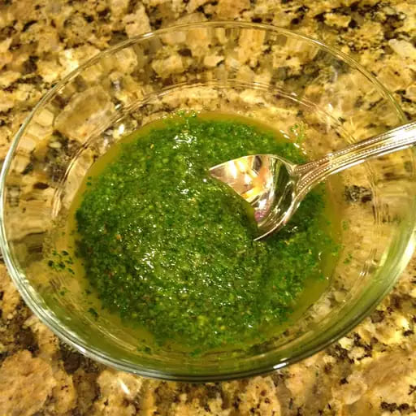

Chimichurri Casero

Chimichurri terminado listo para servir
El chimichurri es una salsa de consistencia líquida,muy condimentada y cuyos ingredientes fundamentales son perejil, orégano, ajo, vinagre, aceite, ají molido y un poco de sal.Es originario de Argentina y consumido en otros países de América.Generalmente es una salsa picante que se utiliza para acompañar las carnes asadas, los choripanes o para marinar pescados y aves.
Ingredientes
- ½ manojo de perejil
- 2 cucharadas de orégano fresco picado finamente
- 2-4 dientes de ajo machacados
- 1 pequeño aji o pimiento picante rojo
Pasos a seguir:
- Preparar una salmuera. Llevar el agua a hervor en una cacerola pequeña. Agregar la sal y revolver hasta que se disuelva. Retirar del fuego y dejar enfriar.
- Picar el ajo en trozos muy pequeños y colocarlo en un bowl. Picar el perejil y el orégano y sumarlos al bowl. Añadir el ají molido.
- Agregar el vinagre revolviendo toda la mezcla, y luego el aceite. Agregar la salmuera, revolver y pasar a un frasco que cierre bien. Mantener en la heladera.